1004B24 power unit with manual gearbox with hydraulic selection - r r
- Path
- Procedures > 10 ENGINE > 1004 ENGINE AND POWER UNIT > 1004B power unit assembly > 1004B24 power unit with manual gearbox with hydraulic selection - r r
- Kind
- repair procedure (removal / refitting; the operation number is the code)
- Applies to
- all engines; all production periods
- Interactive page
- https://sloeber94.github.io/elrnDB-a156/en/#/3237648
Applies to: all engines; all production periods; only with equipment: Smart gearbox
 Removing
Removing
 Refitting
RefittingPosition the vehicle on the ramp.
Connect the Examiner diagnostic equipment.
Keep the brake pedal depressed.
Select 'Alfa 156 Selespeed' on the Examiner.
Select 'Control Unit Test' on the Examiner and select 'Marelli Selespeed Automatic Transmission'.
Press 'Active Diagnosis' on the Examiner and select 'Accumulator depressurizing'.
Follow the procedure on the Examiner.
Ensure that the ignition key is in the OFF position, then disconnect the battery negative terminal.
 | Name | Connector |
|---|---|---|
- | Battery |
4450B12 front or rear wheels (two) - r+r .
7055B64 Engine compartment DUST shield in front wheel arch (one), left or right - R.R. .
7055B54 under-engine guard - r r .
1088D10 lower sleeve for coolant outlet from radiator - r + r .
1016A40 ignition coil cover on cylinder head- r+r .
1. Disconnect the fuel supply pipe from the distributor manifold.
2. Disconnect the rapid attachment for the fuel vapour recirculation pipe.
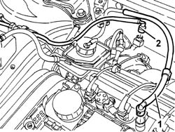
Applies to: all engines; all production periods; only with equipment: Smart gearbox
1. Disconnect the return pipe from the thermostat from the engine coolant reservoir.
2. Disconnect the fuel system pipe from the water pump rigid inlet pipe.
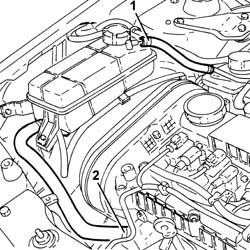
Applies to: all engines; all production periods; only with equipment: Smart gearbox
1008C10 power unit upper reaction link r r .
5530B52 Battery DRIP TRAY/SUPPORT - R.R. .
Remove the electro-hydraulic gear selection system hydraulic circuit fluid reservoir cap.
Drain the electro-hydraulic gear engagement system hydraulic circuit fluid reservoir.
1. Disconnect the pipe between the gear selection hydraulic unit and the reservoir, hydraulic unit side.
2. Disconnect the pipe between the gear selection hydraulic circuit fluid electric pump and the hydraulic unit, hydraulic unit side.
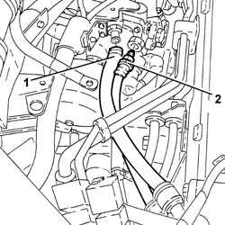
Applies to: all engines; all production periods; only with equipment: Smart gearbox
1. Disconnect the electrical connection for the gear selection hydraulic unit wiring.
| Name | Connector |
|---|---|---|
1 | Transmission sensor junction |
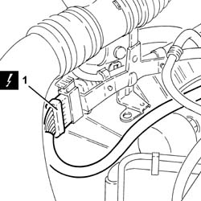
Applies to: all engines; all production periods; only with equipment: Smart gearbox
1. Disconnect the oil vapour recirculation pipe from the tappet cover.
2. Disconnect the electrical connection from the air flow meter.
| Name | Connector |
|---|---|---|
2 | Air flow meter |
3. Disconnect the corrugated hose from the butterfly casing integrated with D.V.L. and remove it.
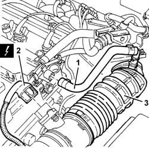
Applies to: all engines; all production periods; only with equipment: Smart gearbox
1048A28 vacuum air circuit resonator pipe - r+r .
1048A10 air cleaner filtering element - replace .
1. Disconnect the electrical connection shown in the diagram from the injection/ignition control unit.
| Name | Connector |
|---|---|---|
1 | Engine management ECU |
2. Disconnect the electrical connection for the front engine wiring coupling.
| Name | Connector |
|---|---|---|
2 | Front/engine connection |
3. Disconnect the electrical connection for the Lambda sensor.
| Name | Connector |
|---|---|---|
3 | Lambda sensor |
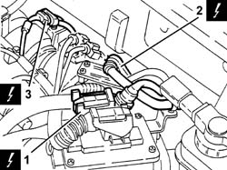
Applies to: all engines; all production periods; only with equipment: Smart gearbox
1. Disconnect the coolant supply pipe to the radiator from the thermostat.
2. Disconnect the coolant supply pipe to the climate control system heater from the thermostat.
3. Disconnect the coolant return pipe from the climate control system heater from the water pump rigid inlet pipe.
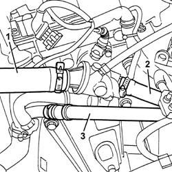
Applies to: all engines; all production periods; only with equipment: Smart gearbox
1. Disconnect the vacuum pipe from the brake servo.
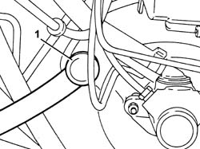
Applies to: all engines; all production periods; only with equipment: Smart gearbox
Drain the power assisted steering reservoir using a suitable syringe.
Disconnect the return pipe from the power assisted steering reservoir.
Undo the connector and disconnect the supply pipe for the power assisted steering box from the power assisted steering pump.
1088E10 radiator cooling fan - r + r .
5040A10 Air conditioning refrigerant CIRCUIT - Draining and Refilling .
1. Undo the bolt (1a) and disconnect the coolant inlet and outlet pipes (1b) from the air conditioning compressor.
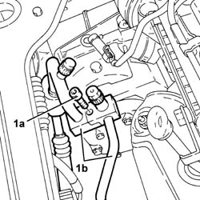
Applies to: all engines; all production periods; only with equipment: Smart gearbox
Disconnect the electrical connections from the starter motor.
| Name | Connector |
|---|---|---|
- | Starter' motor |
1076B50 exhaust pipe attachment to engine - r + r .
1. Undo the bolts (1a) and disconnect the flanges for the driveshaft constant velocity joints (1b).
2. Remove the safety plates.
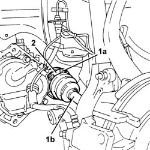
Applies to: all engines; all production periods; only with equipment: Smart gearbox
1. Undo the nut (1a) and disconnect the steering knuckles (1b) from the upper track control arms using the tool (1c).
 | Name | Country |
|---|---|---|
1c | Extractor | 1.821.169.000 |
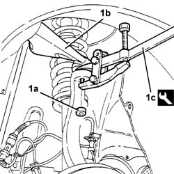
Applies to: all engines; all production periods; only with equipment: Smart gearbox
Release the front brake caliper flexible pipes and the cables for the A.B.S. active sensors from the mounting brackets.
Move the left driveshaft as far away as possible from the differential and the right one away from the intermediate driveshaft.
1. Position tools (1a) and (1b), to be used for removing the power unit, on a hydraulic jack.
| Name | Country |
|---|---|---|
1a | Crossmember | 1.820.225.000 |
| Name | Country |
|---|---|---|
1b | Supports | 1.820.623.000 |
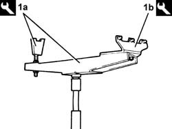
Applies to: all engines; all production periods; only with equipment: Smart gearbox
Position the tool assembled in this way under the power unit and fix it appropriately.
1. Undo the bolt fixing the power unit rigid rear support to the flexible mounting.
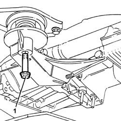
Applies to: all engines; all production periods; only with equipment: Smart gearbox
1008A42 gear box left rigid mount - r r .
1. Undo the bolt fixing the timing side rigid support to the flexible mounting.
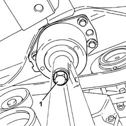
Applies to: all engines; all production periods; only with equipment: Smart gearbox
Move the power unit towards the front of the vehicle and lower it using the hydraulic jack.
Secure and support the power unit using a hydraulic hoist, then release it from the tools used for the removal.
Applies to: all engines; all production periods; only with equipment: Smart gearbox
Refitting
RemovingUsing a hydraulic hoist, position the power unit on a hydraulic jack, complete with tools for refitting.
| Name | Country |
|---|---|---|
- | Crossmember | 1.820.225.000 |
| Name | Country |
|---|---|---|
- | Supports | 1.820.623.000 |
Place the power unit back in the engine compartment using the hydraulic jack.
1. Tighten the bolt ecuring the timing side rigid power unit support to the flexible mounting to the recommended torque.
 | Fastening | Component | Ø | Value (daNm) |
|---|---|---|---|---|
1 | Bolt | ENGINE MOUNT TIMING SIDE | M12 | (Flexible mounting side) 7.5 - 9.2 |
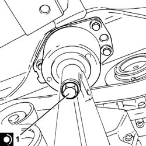
Applies to: all engines; all production periods; only with equipment: Smart gearbox
1008A42 gear box left rigid mount - r r .
1. Tighten the bolt fixing the power unit rigid rear support to the flexible mounting.
| Fastening | Component | Ø | Value (daNm) |
|---|---|---|---|---|
1 | Bolt | POWER UNIT RIGID REAR MOUNT | M12 | (Flexible mounting side) 7.5 ÷ 9.2 |
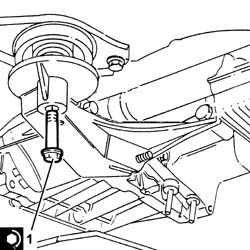
Applies to: all engines; all production periods; only with equipment: Smart gearbox
Remove the tools used for the refitting from the power unit and return them to their place.
Fix the front brake caliper flexible pipes and the A.B.S. active sensor cables to the mounting brackets.
1. Connect the steering knuckles to the upper track control arms (1a) and fix them tightening the nut (1b) to the recommended torque.
| Fastening | Component | Ø | Value (daNm) |
|---|---|---|---|---|
1b | Nut | FRONT HUB STEERING KNUCKLE. | M10 | (Upper track control arm side) 4.3 - 4.7 |
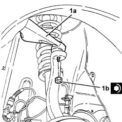
Applies to: all engines; all production periods; only with equipment: Smart gearbox
1. Position the safety plates (1a) and tighten the new bolts (1b) for the driveshaft constant velocity joint flanges (1c) to the recommended torque.
| Fastening | Component | Ø | Value (daNm) |
|---|---|---|---|---|
1b | Bolt | FRONT DRIVE SHAFT COMPLETE WITH JOINTS | M8 | (Diff. int./ intermediate. shaft.) driveshaft side 3.6 ÷ 4.4 |
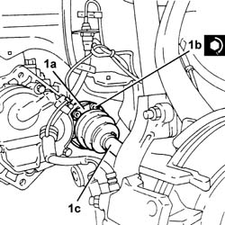
Applies to: all engines; all production periods; only with equipment: Smart gearbox
1076B50 exhaust pipe attachment to engine - r + r .
Connect the electrical connections to the starter motor.
Connect the coolant inlet and outlet pipes to the air conditioning compressor and fix them using the bolt.
1088E10 radiator cooling fan - r + r .
Connect the supply pipe to the power assisted steering box to the power assisted steering pump and fix it tightening the connector to the recommended torque.
| Fastening | Component | Ø | Value (daNm) |
|---|---|---|---|---|
- | Connector | PIPE BTWN PUMP + POWER STEERING BOX | M16 | (Power steering pump side) 3.8 ÷ 4.2 |
Connect the return pipe to the power assisted steering reservoir.
Connect the vacuum pipe to the brake servo.
Connect the coolant return pipe from the climate control system heater to the water pump rigid inlet pipe.
Connect the coolant supply pipe to the climate control system heater to the thermostat.
Connect the coolant supply pipe to the radiator to the thermostat.
Connect the electrical connection for the Lambda sensor.
Connect the electrical connection for the front engine coupling wiring.
Connect the electrical connections to the injection/ignition control unit.
1048A10 air cleaner filtering element - replace .
1048A28 vacuum air circuit resonator pipe - r+r .
Place the complete corrugated hose back in its housing and connect it to the butterfly casing with integrated D.V.L.
Connect the electrical connection to the air flow meter.
Connect the oil vapour recirculation pipe to the tappet cover.
Connect the electrical connection for the gear selection hydraulic unit wiring coupling.
Connect the pipe between the gear selection hydraulic circuit fluid electric pump and the hydraulic unit, hydraulic unit side.
| Fastening | Component | Ø | Value (daNm) |
|---|---|---|---|---|
- | Connector | PIPE FROM ELECTRIC PUMP/IMPLEMENTATION UNIT | - | (Hydraulic unit side) 2.0 |
Connect the pipe between the gear selection hydraulic unit and the reservoir, hydraulic unit side.
2127C06 Electro-hydraulic selection manual gearbox HYDRAULIC SYSTEM - Bleeding air .
5530B52 Battery DRIP TRAY/SUPPORT - R.R. .
1008C10 power unit upper reaction link r r .
Connect the fuel system pipe to the water pump rigid inlet pipe.
Connect the return pipe from the thermostat to the engine coolant reservoir.
Connect the rapid attachment for the fuel vapour recirculation pipe.
Connect the fuel supply pipe to the distributor manifold.
1016A40 ignition coil cover on cylinder head- r+r .
1088D10 lower sleeve for coolant outlet from radiator - r + r .
7055B54 under-engine guard - r r .
7055B64 Engine compartment DUST shield in front wheel arch (one), left or right - R.R. .
4450B12 front or rear wheels (two) - r+r .
Fill the power steering circuit with the recommended fluid.
 | Type | Component | Name | Qty. |
|---|---|---|---|---|
- | Fluid | POWER ASSISTED STEERING CIRCUIT | TUTELA GI/A | - |
Bleed the power steerign system as described below.
With the front wheels raised off the ground, with the engine switched off, carry out 4-5 complete steering wheel rotation cycles (left and right).
Check and, if necessary, top up the fluid level in the reservoir.
Position the vehicle on the ground and start up the engine.
Carry out 4 - 5 complete steering wheel rotations (right and left).
Top up the fluid level in the reservoir.
Applies to: engines: 2.0 JTS, 2.0 JTS; all production periods; only with equipment: Smart gearbox
Removing
RefittingPosition the vehicle on the ramp.
Place the gear lever in neutral.
Connect the Examiner diagnostic equipment.
Select 'Alfa Selespeed' on the Examiner.
Select 'Control Unit Test' on the Examiner and select the 'Marelli Selespeed Automatic Transmission'.
Press 'Active Diagnosis' on the Examiner and select 'Accumulator depressurizing'.
Continue with the procedure on the Examiner.
DRAIN THE FUEL HIGH-PRESSURE SYSTEM AS DESCRIBED BELOW.
Start up the engine.
Maintain idle for 2 minutes.
Remove the fuel pump relay.
Wait for the engine to stall.
Try to start the engine: if the engine starts within 10 seconds, wait for it to stall, then try to start it again; if the engine does not start within 10 seconds, continue cranking for a further 5 seconds.
Wait until the engine cools down.
Proceed with removal 4450B12 front or rear wheels (two) - r+r .
Proceed with removal 7055B64 Engine compartment DUST shield in front wheel arch (one), left or right - R.R. .
Proceed with removal 7055B54 under-engine guard - r r .
1. Disconnect the lower coolant outlet hose from the radiator and drain the engine coolant.
Reconnect the rapid attachment for the bottom coolant outlet hose from the radiator.
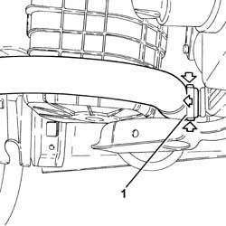
Applies to: engines: 2.0 JTS, 2.0 JTS; all production periods; only with equipment: Smart gearbox
Proceed with removal 1016A40 ignition coil cover on cylinder head- r+r .
1. Disconnect the rapid attachment for the fuel supply pipe and release it from the attachment on the module inlet manifold.
2. Disconnect the rapid attachment coupling for the fuel vapour recover pipe.
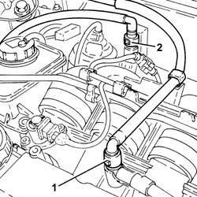
Applies to: engines: 2.0 JTS, 2.0 JTS; all production periods; only with equipment: Smart gearbox
1. Loosen the band and disconnect the coolant return pipe from the engine coolant reservoir.
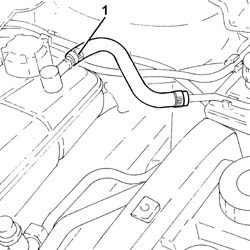
Applies to: engines: 2.0 JTS, 2.0 JTS; all production periods; only with equipment: Smart gearbox
1. Loosen the band and disconnect the system supply pipe from the water pump rigid inlet pipe.
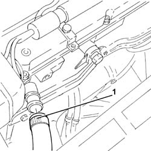
Applies to: engines: 2.0 JTS, 2.0 JTS; all production periods; only with equipment: Smart gearbox
Proceed with removal 1008C10 power unit upper reaction link r r .
Proceed with removal 5530B10 battery - r+r .
Proceed with removal 5530B52 Battery DRIP TRAY/SUPPORT - R.R. .
Remove the electro-hydraulic gear selection system hydraulic circuit fluid reservoir cap.
Drain the electro-hydraulic gear selection system hydraulic circuit fluid reservoir.
1. Loosen the band and disconnect the pipe between the electro-hydraulic gear selection hydraulic unit and the fluid reservoir, hydraulic unit side.
2. Undo the connector and disconnect the pipe between the electric pump and the electro-hydraulic gear selection hydraulic unit, hydraulic unit side.
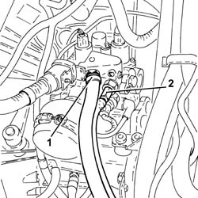
Applies to: engines: 2.0 JTS, 2.0 JTS; all production periods; only with equipment: Smart gearbox
1. Disconnect the electrical connection for the gear selection hydraulic unit wiring.
| Name | Connector |
|---|---|---|
1 | Transmission sensor junction |
2. Disconnect the electrical connection from the air flow meter.
| Name | Connector |
|---|---|---|
2 | Air flow meter |
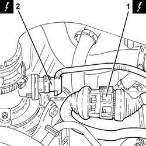
Applies to: engines: 2.0 JTS, 2.0 JTS; all production periods; only with equipment: Smart gearbox
1. Loosen the band and disconnect the oil vapour recirculation pipe from the cam cover.
2. Loosen the band and disconnect the vacuum pipe from the corrugated sleeve.
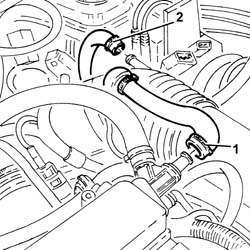
Applies to: engines: 2.0 JTS, 2.0 JTS; all production periods; only with equipment: Smart gearbox
1. Loosen the bands (1a) and remove the rigid pipe (1b) with corrugated air intake sleeve (1c) from the air filter to the throttle body.
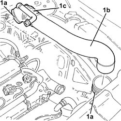
Applies to: engines: 2.0 JTS, 2.0 JTS; all production periods; only with equipment: Smart gearbox
1. Undo the bolt fixing the air filter cold air intake to the bodyshell.
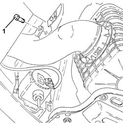
Applies to: engines: 2.0 JTS, 2.0 JTS; all production periods; only with equipment: Smart gearbox
1. Remove the air filter assembly (1a) together with the cold air intake for the air filter (1b).
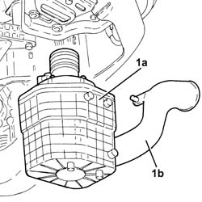
Applies to: engines: 2.0 JTS, 2.0 JTS; all production periods; only with equipment: Smart gearbox
1. Disconnect the electrical connections (1a) and (1b) for the engine wiring.
| Name | Connector |
|---|---|---|
1a | Front/engine connection |
| Name | Connector |
|---|---|---|
1b | Front/engine connection |
2. Loosen the band and disconnect the vacuum pipe from the modular inlet manifold.
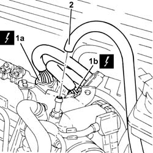
Applies to: engines: 2.0 JTS, 2.0 JTS; all production periods; only with equipment: Smart gearbox
1. Loosen band and disconnect the upper coolant inlet hose to the radiator, thermostat side.
2. Loosen the band and disconnect the coolant return pipe to the climate control heater, thermostat side.
3. Loosen the band and disconnect the coolant outlet pipe from the climate control heater, water pump rigid inlet pipe side.
4. Loosen the band and disconnect the lower radiator coolant outlet hose from the radiator, water pump rigid inlet pipe end.
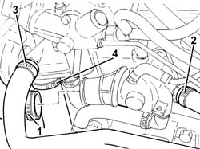
Applies to: engines: 2.0 JTS, 2.0 JTS; all production periods; only with equipment: Smart gearbox
Drain the power assisted steering reservoir using a suitable syringe.
1. Disconnect the electrical connection from the enablement solenoid of the changeover device actuator.
| Name | Connector |
|---|---|---|
1 | Variable geometry control solenoid |
2. Disconnect the vacuum intake pipe from the air flow switching device actuator and release it from the fastening.
3. Disconnect the linkage for the air flow switching control actuator.
4. Undo the bolts (4a) and remove the air flow switching control actuator (4b).
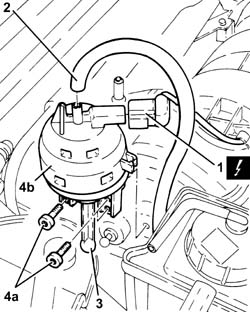
Applies to: engines: 2.0 JTS, 2.0 JTS; all production periods; only with equipment: Smart gearbox
Release the power steering fluid delivery and return pipes from the connection clip.
1. Undo the bolts (1a) and move the power assisted steering fluid reservoir (1b) aside.
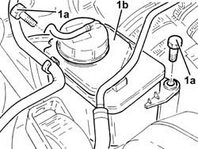
Applies to: engines: 2.0 JTS, 2.0 JTS; all production periods; only with equipment: Smart gearbox
1. Loosen the band and disconnect the power assisted steering fluid return pipe, reservoir side.
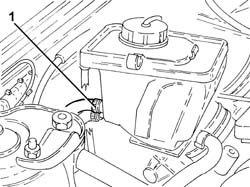
Applies to: engines: 2.0 JTS, 2.0 JTS; all production periods; only with equipment: Smart gearbox
1. Unscrew the connector and disconnect the delivery pipe from pump to power steering box, pump side.
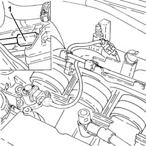
Applies to: engines: 2.0 JTS, 2.0 JTS; all production periods; only with equipment: Smart gearbox
Proceed with removal 1088E10 radiator cooling fan - r + r
Drain the air conditioner coolant circuit 5040A10 Air conditioning refrigerant CIRCUIT - Draining and Refilling .
1. Undo the bolt (1a) and disconnect the flange for the inlet/outlet pipes (1b) from the air conditioning compressor.
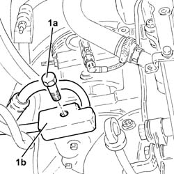
Applies to: engines: 2.0 JTS, 2.0 JTS; all production periods; only with equipment: Smart gearbox
Proceed with removal 1076B18 rigid section of exhaust pipe between catalytic converter and silencer - r + r .
Disconnect the electrical connections from the starter motor.
| Name | Connector |
|---|---|---|
- | Starter' motor |
1. Disconnect the electrical connection from the reversing switch.
| Name | Connector |
|---|---|---|
1 | Reversing lights switch |
2. Disconnect the battery earth lead from the gearbox.
| Name | Connector |
|---|---|---|
2 | Battery earth |
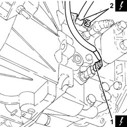
Applies to: engines: 2.0 JTS, 2.0 JTS; all production periods; only with equipment: Smart gearbox
1. Undo the bolts (1a) and disconnect the flanges for the driveshaft constant velocity joints (1b).
Remove the safety plates.
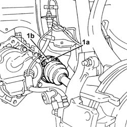
Applies to: engines: 2.0 JTS, 2.0 JTS; all production periods; only with equipment: Smart gearbox
1. Undo the nut (1a) and disconnect the steering knuckles (1b) from the upper track control arms using the tool (1c).
| Name | Country |
|---|---|---|
1c | Extractor | 1.821.169.000 |
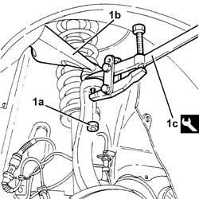
Applies to: engines: 2.0 JTS, 2.0 JTS; all production periods; only with equipment: Smart gearbox
Release the front brake caliper flexible pipes and the cables for the A.B.S. sensors from the mounting brackets.
Move the left driveshaft as far away as possible from the differential and the right one away from the intermediate driveshaft.
1. Position tools (1a) and (1b), to be used for removing the power unit, on a hydraulic jack.
| Name | Country |
|---|---|---|
1a | Crossmember | 1.820.225.000 |
| Name | Country |
|---|---|---|
1b | Supports | 1.820.623.000 |
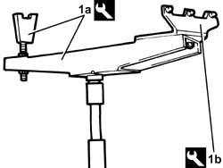
Applies to: engines: 2.0 JTS, 2.0 JTS; all production periods; only with equipment: Smart gearbox
Position the tool assembled in this way under the power unit and fix it appropriately.
1. Undo the bolt fixing the power unit rigid rear support to the flexible mounting.
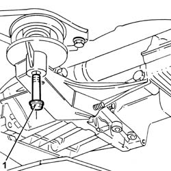
Applies to: engines: 2.0 JTS, 2.0 JTS; all production periods; only with equipment: Smart gearbox
1. Undo the bolts (1a), (1b) and remove the gearbox side power unit rigid support (1c).
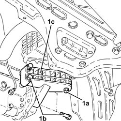
Applies to: engines: 2.0 JTS, 2.0 JTS; all production periods; only with equipment: Smart gearbox
1. Undo the bolt fixing the timing side rigid support to the flexible mounting.
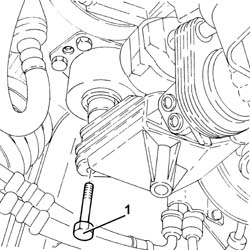
Applies to: engines: 2.0 JTS, 2.0 JTS; all production periods; only with equipment: Smart gearbox
Move the power unit towards the front of the vehicle and lower it using the hydraulic jack.
Secure and support the power unit using a hydraulic hoist, then release it from the tools used for the removal.
Applies to: engines: 2.0 JTS, 2.0 JTS; all production periods; only with equipment: Smart gearbox
Refitting
RemovingUsing a hydraulic hoist, position the power unit on a hydraulic jack, complete with tools for refitting.
| Name | Country |
|---|---|---|
- | Crossmember | 1.820.225.000 |
| Name | Country |
|---|---|---|
- | Supports | 1.820.623.000 |
Place the power unit back in the engine compartment using the hydraulic jack.
1. Tighten the bolt ecuring the timing side rigid power unit support to the flexible mounting to the recommended torque.
| Fastening | Component | Ø | Value (daNm) |
|---|---|---|---|---|
1 | Bolt | ENGINE MOUNT TIMING SIDE | M12 | (Flexible mounting side) 7.9 ÷ 9.7 |
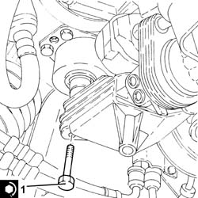
Applies to: engines: 2.0 JTS, 2.0 JTS; all production periods; only with equipment: Smart gearbox
1. Refit the gearbox side power unit rigid support (1a) in its seating and tighten the bolts (1b) to the specified torque.
| Fastening | Component | Ø | Value (daNm) |
|---|---|---|---|---|
1b | Bolt | POWER UNIT GEAR BOX END RIGID MOUNT | M10 | (Gearbox side) 4.5 ÷ 5.5 |
2. Undo the bolt fixing the gearbox side rigid power unit support to the flexible block to the specified torque.
| Fastening | Component | Ø | Value (daNm) |
|---|---|---|---|---|
2 | - | - | - | - |
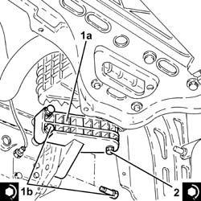
Applies to: engines: 2.0 JTS, 2.0 JTS; all production periods; only with equipment: Smart gearbox
1. Tighten the bolt fixing the power unit rigid rear support to the flexible mounting.
| Fastening | Component | Ø | Value (daNm) |
|---|---|---|---|---|
1 | - | - | - | - |
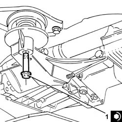
Applies to: engines: 2.0 JTS, 2.0 JTS; all production periods; only with equipment: Smart gearbox
Remove the tools used for the refitting from the power unit and return them to their place.
Fix the front brake caliper flexible pipes and the A.B.S. sensor cables to the mounting brackets.
1. Connect the steering knuckles to the upper track control arms (1a) and fix them tightening the nut (1b) to the recommended torque.
| Fastening | Component | Ø | Value (daNm) |
|---|---|---|---|---|
1b | Nut | FRONT HUB STEERING KNUCKLE. | M10 | (Upper track control arm side) 4.3 - 4.7 |
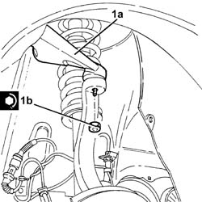
Applies to: engines: 2.0 JTS, 2.0 JTS; all production periods; only with equipment: Smart gearbox
1. Position the safety plates and tighten the new bolts (1a) for the driveshaft constant velocity joint flanges (1b) to the recommended torque.
| Fastening | Component | Ø | Value (daNm) |
|---|---|---|---|---|
1a | Bolt | FRONT DRIVE SHAFT COMPLETE WITH JOINTS | M8 | (Diff. int./ intermediate. shaft.) driveshaft side 3.6 ÷ 4.4 |
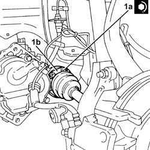
Applies to: engines: 2.0 JTS, 2.0 JTS; all production periods; only with equipment: Smart gearbox
Connect the electrical connection to the reversing switch.
Connect the battery earth lead to the gearbox.
Connect the electrical connections to the starter motor.
Proceed with refitting 1076B18 rigid section of exhaust pipe between catalytic converter and silencer - r + r .
1. Connect the flange for the inlet/outlet pipes (1a) to the air conditioning compressor and secure it by tightening the bolt (1b) to the recommended torque.
| Fastening | Component | Ø | Value (daNm) |
|---|---|---|---|---|
1b | Bolt | Air conditioning compressor inlet/outlet pipes. | M10 | (Air conditioner compressor side) 3.2 ÷ 3.9 |
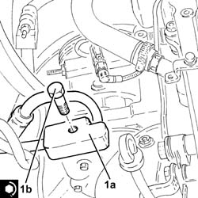
Applies to: engines: 2.0 JTS, 2.0 JTS; all production periods; only with equipment: Smart gearbox
Proceed with refitting 1088E10 radiator cooling fan - r + r .
1. Connect the supply pipe from the power assisted steering pump to the box, pump side and tighten the connector to the recommended torque.
| Fastening | Component | Ø | Value (daNm) |
|---|---|---|---|---|
1 | Connector | PIPE BTWN PUMP + POWER STEERING BOX | M16 | (Power steering pump side) 3.8 ÷ 4.2 |
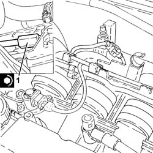
Applies to: engines: 2.0 JTS, 2.0 JTS; all production periods; only with equipment: Smart gearbox
Connect the return pipe to the power steering fluid reservoir and tighten the band.
Refit in its seating the power steering fluid reservoir and secure it with its bolts.
Secure the delivery and return lines from the power steering reservoir using the connection band.
Fit the air flow switching device actuator in its seating and secure it using the bolts.
Connect the linkage for the air flow switching control actuator.
Connect the air flow switching control actuator vacuum intake pipe and fasten it.
Connect the electrical connection from the enablement solenoid of the changeover device actuator.
Connect the lower radiator coolant outlet hose to the water pump rigid inlet pipe and tighten the band.
Connect the coolant return hose from the climate control heater on the side of the rigid inlet pipe to the water pump and do up the band.
Connect the engine coolant return pipe from the climate control system heater, thermostat side, and tighten the band.
Connect the upper coolant inlet hose to the radiator, thermostat side, and tighten the band.
Connect the vacuum pipe to the modular inlet manifold and tighten the band.
Connect the engine wiring electrical connections.
Place the air filter back assembly in its housing and connect it to the cold air intake for the air filter.
Tighten the bolt securing the cold air intake for air filter to the bodywork.
Place the rigid air supply pipe with corrugated air intake sleeve from the filter to the throttle body back in its housing and secure it using the bands.
Connect the vacuum pipe to the corrugated hose and tighten the band.
Connect the oil vapour recirculation pipe to the tappet cover and secure with a band.
Connect the electrical connection to the air flow meter.
Connect the electrical connection for the gear selection hydraulic unit wiring.
1. Connect the pipe between the electric pump and the electro-hydraulic gear selection hydraulic unit, hydraulic unit side and tighten the connector to the recommended torque.
| Fastening | Component | Ø | Value (daNm) |
|---|---|---|---|---|
1 | Connector | PIPE FROM PUMP/ACTUATOR UNIT | - | (Implementation unit side) 1.8 ÷ 2.2 |
2. Connect the pipe from the electro-hydraulic gear selection hydraulic unit to the fluid reservoir, hydraulic unit side and tighten the band.
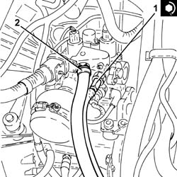
Applies to: engines: 2.0 JTS, 2.0 JTS; all production periods; only with equipment: Smart gearbox
Proceed with refitting 2127C04 ELECTROHYDRAULIC selection gearbox hydraulic system FLUID - Check level and top up if necessary. .
Proceed with refitting 2127C06 Electro-hydraulic selection manual gearbox HYDRAULIC SYSTEM - Bleeding air .
Proceed with refitting 5530B52 Battery DRIP TRAY/SUPPORT - R.R. .
Proceed with refitting 5530B10 battery - r+r .
Proceed with refitting 1008C10 power unit upper reaction link r r .
Connect the system supply pipe to the water pump rigid inlet pipe and tighten the band.
Connect the coolant return pipe to the engine coolant reservoir and tighten the band.
Connect the rapid attachment for the fuel vapour recovery pipe.
Connect the rapid attachment connector for the fuel supply pipe and secure it to the fastening on the modular intake manifold.
Proceed with refitting 1016A40 ignition coil cover on cylinder head- r+r .
Proceed with refitting 7055B54 under-engine guard - r r .
Proceed with refitting 7055B64 Engine compartment DUST shield in front wheel arch (one), left or right - R.R. .
Proceed with refitting 4450B12 front or rear wheels (two) - r+r .
Proceed with refitting 0010T20 coolant change .
Fill the power steering circuit with the recommended fluid.
| Type | Component | Name | Qty. |
|---|---|---|---|---|
- | Fluid | HYDRAULIC POWER ASSISTED STEERING SYSTEM | TUTELA GI/A | 1.3 |
Bleed the power steering system as described below.
With the front wheels raised off the ground, with the engine switched off turn the steering wheel to full lock, left and right, 4-5 times.
Check and, if necessary, top up the fluid level in the reservoir.
Position the vehicle on the ground and start up the engine.
Carry out 4 - 5 complete steering wheel rotation cycles (right and left).
Top up the fluid level in the reservoir.
Fill the air conditioner coolant circuit 5040A10 Air conditioning refrigerant CIRCUIT - Draining and Refilling .
Topics linked from this page (30)
- 0010T20 coolant change
- 1008A42 gear box left rigid mount - r r
- 1008C10 power unit upper reaction link r r
- 1016A40 ignition coil cover on cylinder head- r+r
- 1048A10 air cleaner filtering element - replace
- 1048A28 vacuum air circuit resonator pipe - r+r
- 1076B18 rigid section of exhaust pipe between catalytic converter and silencer - r + r
- 1076B50 exhaust pipe attachment to engine - r + r
- 1088D10 lower sleeve for coolant outlet from radiator - r + r
- 1088E10 radiator cooling fan - r + r
- 2127C04 ELECTROHYDRAULIC selection gearbox hydraulic system FLUID - Check level and top up if necessary.
- 2127C06 Electro-hydraulic selection manual gearbox HYDRAULIC SYSTEM - Bleeding air
- 4450B12 front or rear wheels (two) - r+r
- 5040A10 Air conditioning refrigerant CIRCUIT - Draining and Refilling
- 5530B10 battery - r+r
- 5530B52 Battery DRIP TRAY/SUPPORT - R.R.
- 7055B54 under-engine guard - r r
- 7055B64 Engine compartment DUST shield in front wheel arch (one), left or right - R.R.
- A1B Battery ( BATTERY NEGATIVE )
- A20 Starter' motor
- C1 Battery earth ( BATTERY NEGATIVE )
- D4 Front/engine connection
- D4A Front/engine connection ( ENGINE )
- D4B Front/engine connection ( ENGINE )
- D79 Transmission sensor junction
- I20 Reversing lights switch
- K40 Lambda sensor
- K41 Air flow meter ( ENGINE )
- L15 Variable geometry control solenoid
- M10 Engine management ECU